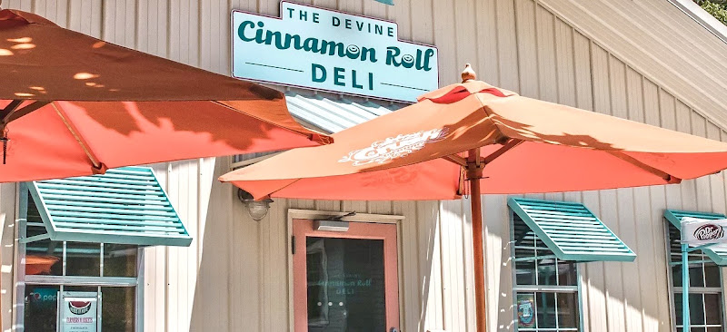
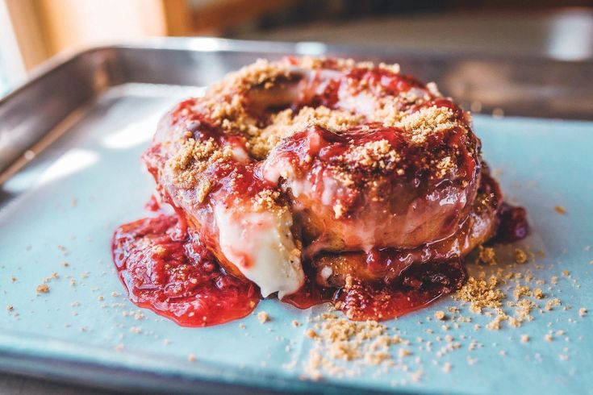

Tucked away in Columbia, The Divine Cinnamon Roll Deli has been a local favorite since 1993. What started as a simple cinnamon roll bakery has evolved into a beloved breakfast and lunch spot that keeps locals coming back for more. Their signature cinnamon rolls are legendary - massive, gooey, and made fresh daily with a secret family recipe. But don't sleep on their deli sandwiches and breakfast options, which are equally impressive. The cozy, no-frills atmosphere makes it the perfect spot for a casual meal with friends or a quick bite between classes.
Walking into The Divine Cinnamon Roll Deli, you're immediately hit with the warm, sweet aroma of fresh-baked cinnamon rolls. The space is cozy and casual with a no-frills, homey vibe that feels authentically local, though seating is limited so it's more grab-and-go than a hangout spot. The staff is friendly and efficient, especially during the morning rush when lines can stretch out the door on weekends. For the best experience, hit it on a weekday mid-morning around 10 AM to avoid crowds and ensure they still have a full selection of flavors. Pro tip: popular varieties like the strawberry cinnamon roll can sell out by early afternoon, so get there early or call ahead!
| Weekday | Hours | Pick 2 Menu |
|---|---|---|
| Sunday | 7:00 AM-2:00 PM | 1/2 One Meat BYO Sandwish |
| Monday | Closed | 1 NYC Pushcart Dog |
| Tuesday | Closed | Cup of Soup |
| Wednsday | 7:00 AM-2:00 PM | Small Chili |
| Thursday | 7:00 AM-2:00 PM | 1/2 Ultimate Grilled Panini |
| Friday | 7:00 AM-2:00 PM | Side Salad |
| Saturday | 7:00 AM-2:00 PM | 1/2 Specialtly Sandwich(+$1) |